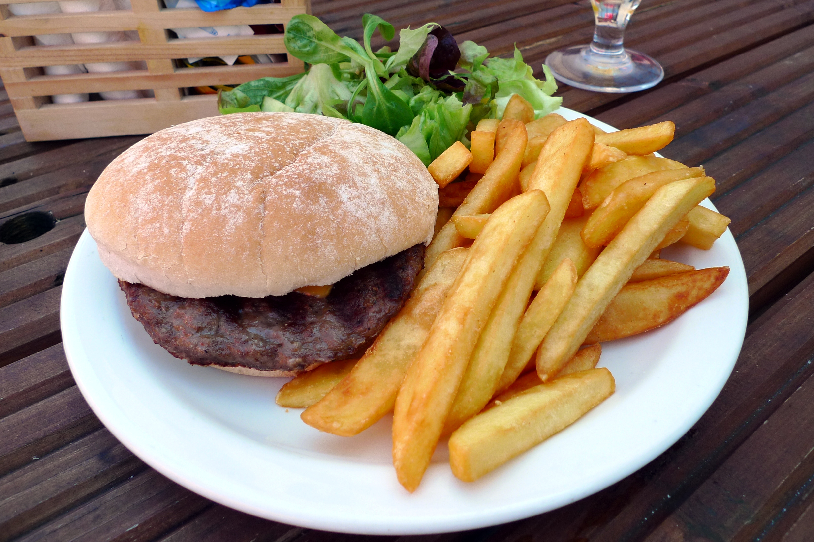

French Fries
French fries (North American English), chips (British English), finger chips (Indian English), or French-fried potatoes are batonnet or allumette-cut deep-fried potatoes of disputed origin from Belgium or France. They are one of the most beloved and widely consumed fast-food items in the world.
French fries are served hot, either soft or crispy, and are generally eaten as part of lunch or dinner or by themselves as a snack. They are frequently paired with ketchup, mayonnaise, vinegar, or dozens of other condiments depending on the country.
Quick Facts
| Alternative names | Chips, finger chips, fries, frites, hot chips, steak fries |
|---|---|
| Course | Side dish or snack |
| Place of origin | Belgium or France (disputed) |
| Main ingredients | Potatoes, vegetable oil, salt |
| Variations | Curly fries, waffle fries, poutine, chili cheese fries, tornado fries |
| Calories (large serving) | Approximately 510 kcal |